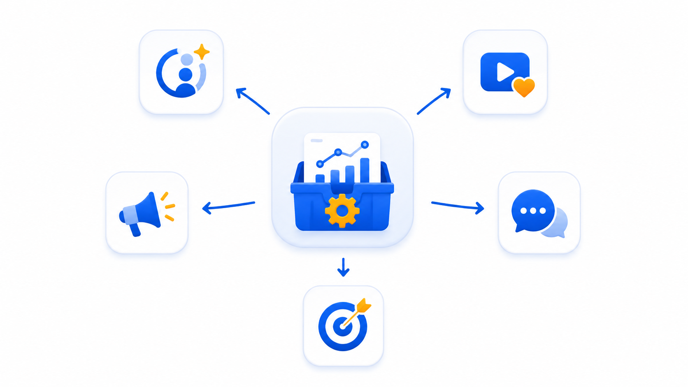

Hootsuite fue durante años la herramienta de referencia para gestionar redes sociales. Pero en 2026 el mercado ha cambiado: hay alternativas más baratas, más modernas y en muchos casos más completas. Si estás pagando por Hootsuite o estás buscando tu primera herramienta, este artículo te ahorra tiempo y dinero.
1. Metricool — La mejor alternativa para España
Metricool
Herramienta española con más de 1 millón de usuarios. La alternativa más completa a Hootsuite para el mercado hispanohablante. Tiene todo lo que Hootsuite ofrece en sus planes medios, a un tercio del precio.
Ventajas vs Hootsuite
- Plan gratuito permanente real
- Informes PDF incluidos desde Starter
- Análisis de competidores gratis
- Interfaz y soporte en español
- Precio fijo por marca, no por canal
- Integración nativa con Canva
Peor que Hootsuite en
- Escucha social menos potente
- Menos integraciones enterprise
Ideal para: autónomos, community managers y agencias pequeñas en España que necesitan gestionar varias marcas con informes para clientes.
2. Buffer — La más simple
Buffer
La herramienta más fácil de usar del mercado. Plan gratuito con 3 canales incluidos. Perfecta si gestionas pocas cuentas y priorizas la simplicidad sobre las analíticas avanzadas.
Ventajas vs Hootsuite
- Interfaz mucho más simple
- Plan gratuito con 3 canales
- Extensión de Chrome muy útil
- Precio competitivo para pocos canales
Peor que Hootsuite en
- Sin analíticas avanzadas
- Sin informes para clientes
- Precio escala mal (+5 canales)
Ideal para: creadores individuales o pequeños negocios que gestionan sus propias redes sin necesitar informes.
3. Later — La mejor para contenido visual
Later
Later nació especializado en Instagram y ha crecido hasta cubrir todas las redes principales. Su calendario visual de arrastrar y soltar es el mejor del mercado para quienes trabajan con mucho contenido fotográfico o de vídeo.
Ventajas vs Hootsuite
- Calendario visual superior para fotos/vídeos
- Plan gratuito disponible
- Linkin.bio incluido
- Mejor herramienta para Instagram y TikTok
Peor que Hootsuite en
- Menos redes sociales soportadas
- Analíticas más básicas
- Sin soporte en español
Ideal para: marcas de moda, restaurantes, hoteles o cualquier negocio donde el contenido visual es el protagonista.
4. Publer — La más completa por precio
Publer
La alternativa menos conocida pero sorprendentemente potente. Publer incluye funciones que Hootsuite solo ofrece en planes enterprise: reciclaje de contenido, publicación en Google Business, integración con Canva y Unsplash, y generación de contenido con IA.
Ventajas vs Hootsuite
- Precio mucho menor
- Reciclaje automático de contenido evergreen
- IA para generación de posts incluida
- Publica en Google Business Profile
- Integración Canva y Unsplash
Peor que Hootsuite en
- Comunidad y recursos más pequeños
- Sin soporte en español
- Analíticas menos profundas
Ideal para: negocios locales y autónomos que quieren funciones avanzadas sin pagar precio enterprise.
5. Zoho Social — La mejor para equipos pequeños
Zoho Social
Zoho Social forma parte del ecosistema Zoho (CRM, correo, proyectos). Si ya usas otras herramientas de Zoho, la integración es perfecta. Para equipos de 2-5 personas que necesitan colaborar en la gestión de redes, es una de las opciones más completas a este precio.
Ventajas vs Hootsuite
- Precio más bajo para equipos pequeños
- Integración con Zoho CRM
- Monitorización de menciones incluida
- Colaboración en equipo desde plan básico
Peor que Hootsuite en
- Interfaz más anticuada
- Menos redes sociales soportadas
- Útil principalmente si ya usas Zoho
Ideal para: pequeñas empresas con equipo de 2-5 personas que ya usan el ecosistema Zoho.
Tabla comparativa de precios
| Herramienta | Plan gratuito | Precio mínimo pago | Informes PDF | Español |
|---|---|---|---|---|
| Metricool | Sí (permanente) | ~18€/mes | Sí | Sí |
| Buffer | Sí (3 canales) | ~5$/canal/mes | No | Parcial |
| Later | Sí | ~16,67$/mes | No | No |
| Publer | Sí | ~12$/mes | No | No |
| Zoho Social | Sí | ~10€/mes | Sí | Sí |
| Hootsuite | No | ~10€/mes | Solo premium | Parcial |
¿Cuál elegir?
Depende de tu situación:
- Autónomo o agencia en España con clientes: Metricool. Sin duda.
- Solo gestionas tus propias 2-3 redes: Buffer gratis.
- Negocio muy visual (moda, gastronomía, hostelería): Later.
- Quieres muchas funciones al mínimo precio: Publer.
- Equipo pequeño ya en ecosistema Zoho: Zoho Social.
Recomendación general
Para la gran mayoría de profesionales en España, Metricool es la alternativa a Hootsuite más completa y mejor valorada. Empieza gratis, crece sin sorpresas de precio, y tiene soporte en español cuando lo necesitas.